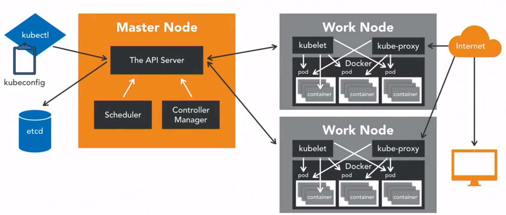

Infrastructure Automation
HOGENT applied
computer science
Bert Van Vreckem & Thomas Aelbrecht
2022-2023
It’s complicated!
= tool that allows container management at scale
Kubernetes (k8s) is an open source project that enables software teams of all sizes, from a small startup to a Fortune 100 company, to automate deploying, scaling, and managing applications on a group or cluster of server machines
These applications can include everything from internal-facing web applications like a content management system, to marquee web properties like Gmail, to big data processing.
– Jo Beda (Google)

kubectl
ansible, ansible-playbook
commands!kubeconfig
kubelet: communicate with Master Nodekube-proxy)"environment": "prod",
"tier": "backend", etc.minikube on your physical system
kubectlminikube